Chapter 12 Show
👉 Manage files, import and and convert Shows from different sources into a Vibe Show.
This chapter describes how to save and load a Vibe Show file, merge two Vibe show files, import the data programmed on the Compulite Vector software or from MVR files and convert them into a Vibe show file.
Chapter index:
12.1 Vibe Show
Vibe Show files can be saved and exported in the proprietary .shw file format, by opening the Save Show popup on the Vibe Menu.
👉 Vibe keeps a flash memory of all the current data which permits not losing any programmed information even in case of power cutoffs or software crashes. In addition the AutoSave option may be enabled in the System Settings, to automatically save a backup copy of the current show file at assigned timing intervals. Nevertheless it is always recommended to manually save the show file from time to time and to export a copy on an external drive, as a general safe rule to avoid any possibility of losing show data.
12.1.1 Save Show
The top header of the Vibe Menu reports the currently loaded show name.
Save Show menu option overwrites the changes on the current show file.
Save Show As menu option opens the Save Show popup, where the file name and destination may be changed.
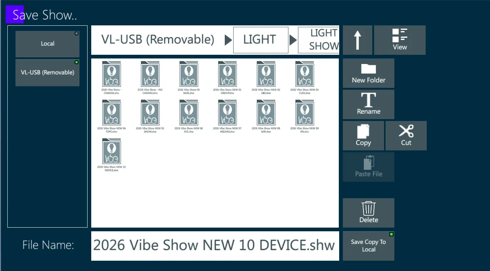
The popup shows the Vibe Shows folder as well as the external devices connected.
If saving the show on an external drive, enable the [Save Copy to Local] key to save a copy of the file in the Vibe local folder at the same time.
👉 Vibe Show files contain all the information regarding the show, including output values, stored objects, any patch, program and playback data. It does not include any information regarding the graphical interface, such as pages’ setup and views’ positioning and settings. All the graphical user interface’s data may be stored in a Vibe Layout file.
12.1.2 Load Show
To load a Vibe Show, open the Load Show popup from the Vibe Menu.
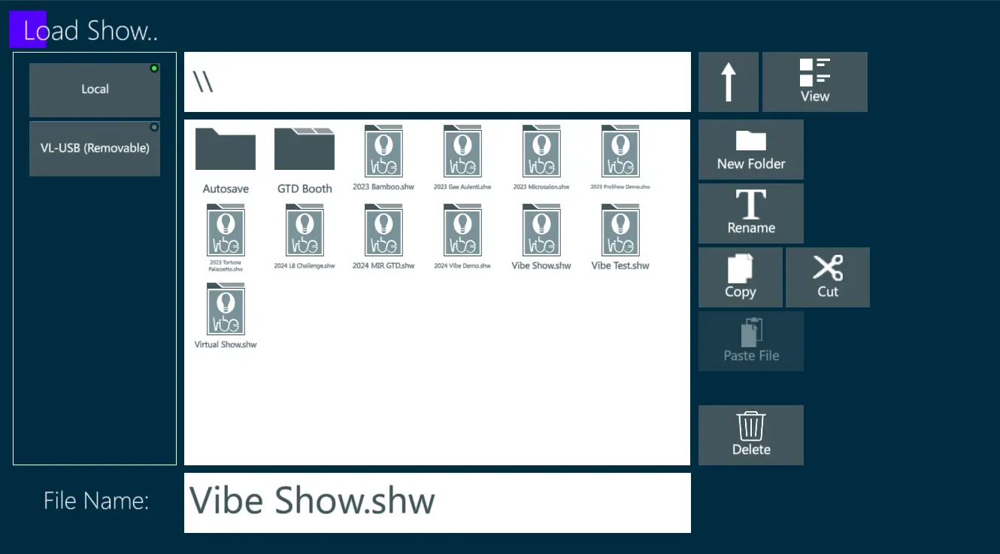
The View key toggles the files list between the icons and the detailed visualization.
Vibe Shows from previous software versions
If loading a show file which was saved on a previous software version, it will be converted to the current software version without losing any stored data.
👉 It is generally recommended to save the loaded show in order to update it to the newer software version, so that it could support any new feature which may have been added more recently.
Vibe Shows with outdated Devices
Vibe show files include the imported devices.
When loading a show file the system automatically check if the devices in the show file are matching to the devices in the console database.
If one or more devices are not matched (this may happen, for example, if a new device update has been released and installed), a popup advice tells that there are some devices Not Up To Date.
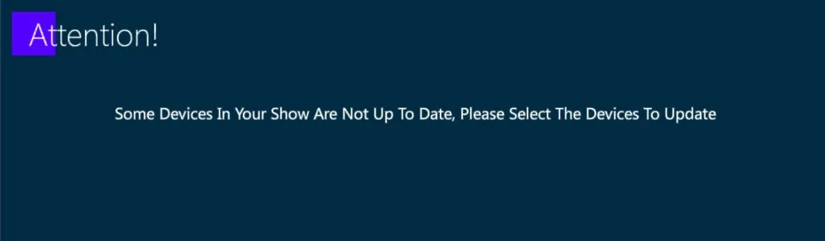
Then the Device Update Match popup opens to let the used choose between keeping the existing device, by setting {Don’t Change}, or updating it to the new device, by setting the desired mode from the suggested new device.
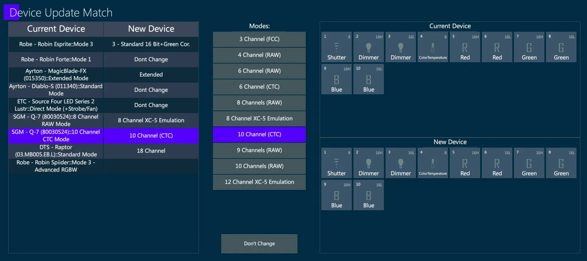
The parameters of the Current and the New devices can be compared by checking the boxes on the right side of the popup.
The show loading will then automatically perform the device replacement operations needed to update the show’s device from the current to the new devices, as set in the Device Update Match popup.
12.1.4 Merge Show
Merge Show is the Vibe feature to merge the programming objects and data coming from different Vibe shows, based on the same patch information.
Vibe Menu, Show, Merge Show launches a popup where the user may select the Vibe show file to import the programming data from.
When opening the source show, a popup gives the basic instructions to perform the merge show operation, and allows checking the default merge option between Overwrite, Update and Discard.
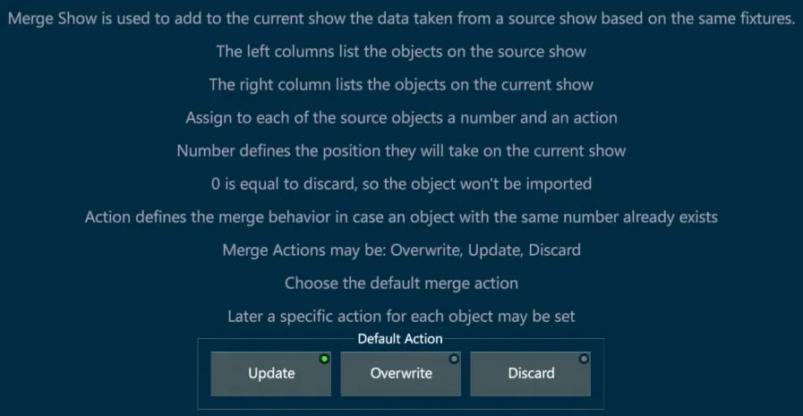
Use the introduction popup to select the default option that will be set to every object, based on the major use that has to be done with the imported data.
After that all these merging options can be manually set and modified for each single object in the following tabs, as well as other options such as objects’ renumbering and renaming.
Program Objects that may be imported are:
Qlists
Scenes
Libraries
Groups
Macros
Filters
Topos
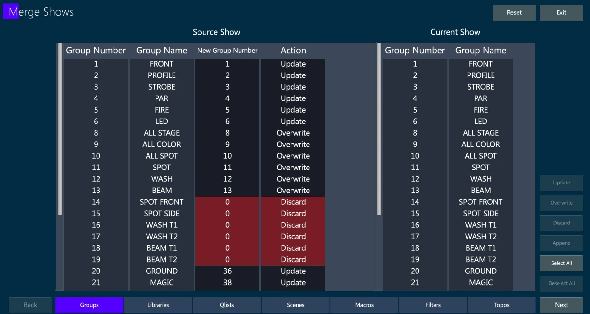
Merge Show rules and limitations:
The source and current shows must be saved on the same Vibe software version.
The source show’s Fixtures, Devices and Patch data must be matching. If any change has been made to fixtures and devices of the two shows, the popup will tell which are the non-matching fixtures whose data cannot be imported in the current show.
The feature supports merging of Program objects, the Patch data of the current show will not be modified, the Playback configuration of the current show will not be modified and the Playback configuration of the source show will not be imported.
Topos and Macros cannot be updated but only overwritten.
After all the tabs have been navigated and the content to merge is set, press apply to start the show merge. When the operation is performed a popup will give the option to save the merged show file.
It is recommended to rename the merged show in order to keep a copy of the unmerged one, in case any error has been made while selecting the objects to import.
👉 The Merge Show feature permits to work on the show programming on different Vibe systems and then merge the contents together into the same show file. This comes useful for shows which are pre-programmed by different users and then controlled by the same operator.
👉 A sample scenario for the Merge Show is when there is an operator who is programming on a 3D visualizer while another is working on stage. The first one can store Cues based on libraries while the second one can update the library according to the fixtures’ mounting, and then the two shows can be merged by importing the adjusted libraries into the pre-programmed show.
12.2 Vibe Layout
The interface of the Vibe can be customized on user preferences and saved into a Layout file.
Vibe Layout files can be saved and exported in the proprietary .lay file format, by opening the Save Layout popup on the Vibe Menu.
12.2.1 Save Layout
Save Layout menu option overwrites the changes on the current layout file.
Save Layout As menu option opens the Save Layout popup, where the file name and destination may be changed.
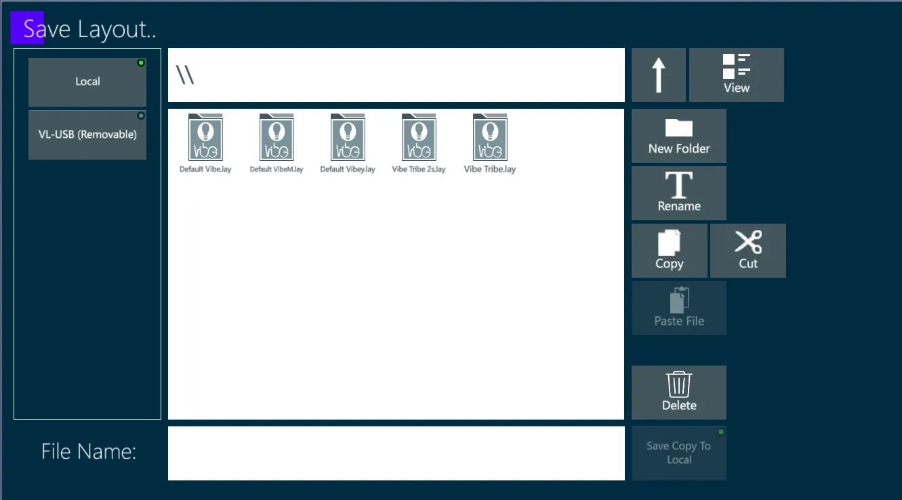
The popup shows the Vibe Shows folder as well as the external devices connected.
If saving the layout on an external drive, enable the [Save Copy to Local] key to save a copy of the file in the Vibe local folder at the same time.
👉 Vibe Layout files contain all the information regarding the graphical interface, such as pages’ setup and views’ positioning and settings. It does not include any information regarding the show, such as output values, stored objects, any patch, program and playback data. All the show data have to be stored in a Vibe Show file.
Layout changes are kept at start up but have not an Auto Save function.
In case important changes have been made on the layout customized by the user, remember to save a copy of it to avoid losing the user interface configuration.
👉 Saving a Custom Layout is also very important when moving to a different Vibe console, to easily get the interface configured as usual by loading a personal layout file.
12.2.2 Load Layout
To load a Vibe Layout, open the Load Layout popup from the Vibe Menu.
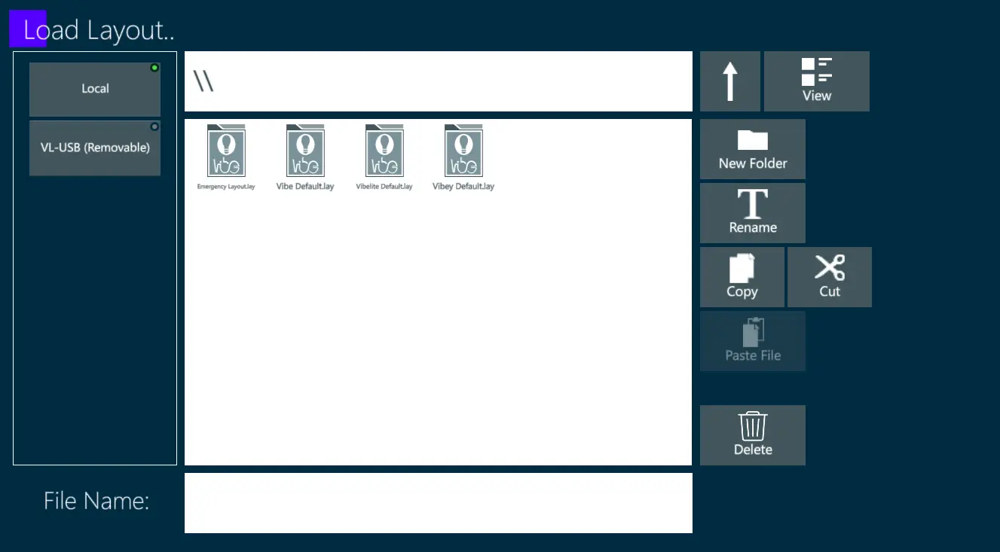
The View key toggles the files list between the icons and the detailed visualization.
Vibe Shows from previous software versions
If loading a layout file which was saved on a previous software version, it will be converted to the current software version and the views that may have been changed will be switched with the new version’s views.
👉 It is generally recommended to save the custom layouts on the latest software version in order to update it with the newest features which may have been added more recently.
12.2.3 Default Layout
Vibe installation (and software updates) contain the Default Layout according to the console model in use, including the VibePC version.
The Vibe Layout can be edited as preferred, while the Default Layout can always be reloaded by pressing the Default Layout button on the Vibe Menu.
When pressed, a popup advice will ask the user to confirm loading the default layout and losing all the visualization changes that have been made. Be sure the changes have been saved in a Layout file if they need to be kept.
👉 The Default Layout may be a useful basic interface configuration, already including most of the Vibe views, that the user can customize to create and save his personal layout, instead of starting from scratch from empty pages of a New Layout.
12.3 Vector Show
Load Vector Show is the Vibe feature designed to import and convert a show file saved in the Vector software format, which is the previous lighting control system developed by Compulite.
To import and convert a Vector show, open the Load Vector Show popup from the Vibe Menu.
The Load Vector Show popup is similar to the Load Show popup, but only the files in Vector format (.cvs) are visualized.
If opened from a PC that has Vector software installed, it will allow to load a show directly from the Vector’s show folder.
After selecting the Vector show file it will be analyzed by the Vibe and then a popup will guide through the process of device matching and show conversion.
12.3.1 Compulite Vector
Compulite Vector is the software running on the previous console series manufactured by Compulite.
The Compulite Vector Series includes the following products:

- Vector Red
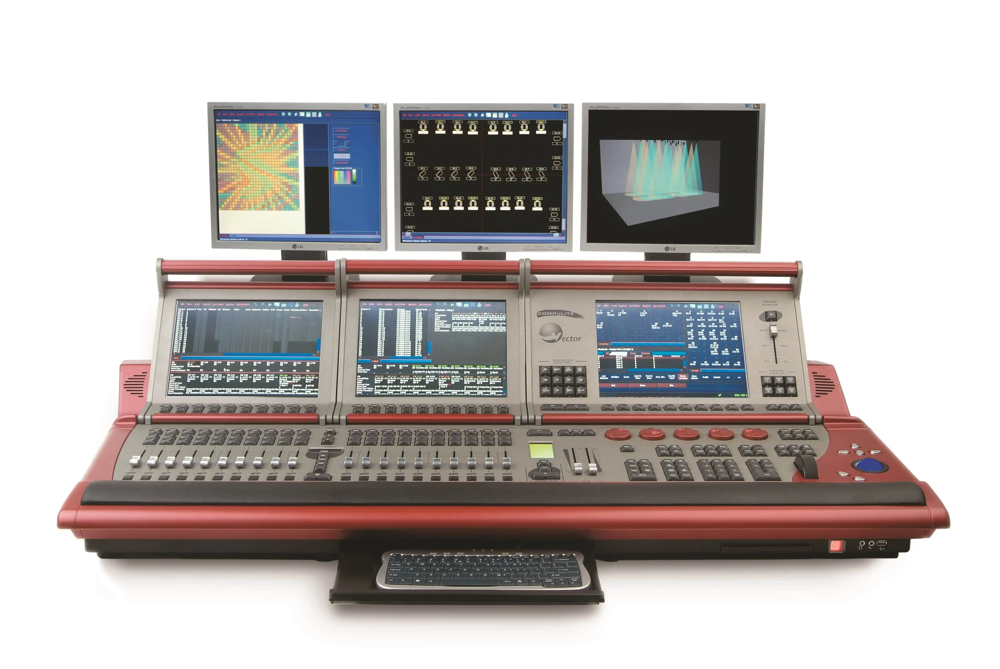
- Vector Blue
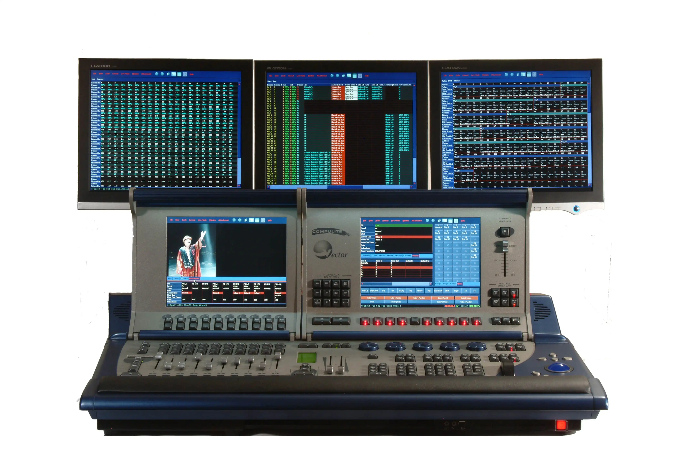
- Vector Green (discontinued)
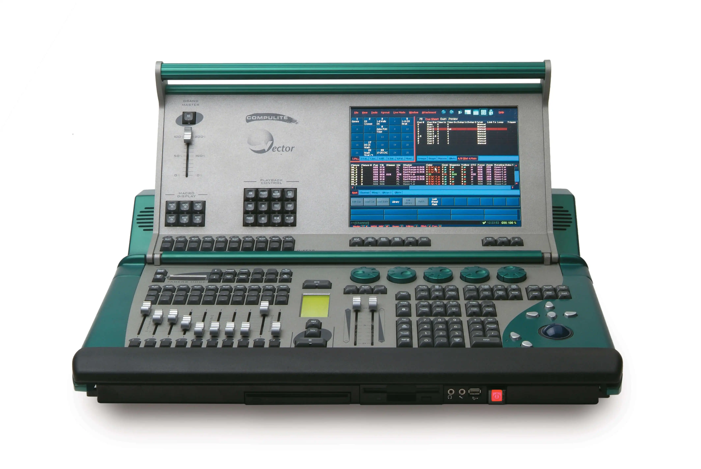
- Vector Orange (discontinued)
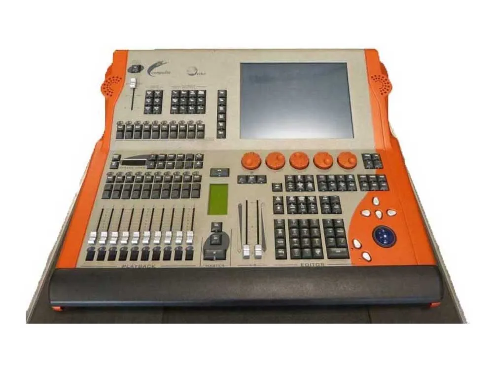
- Vector Violet and Vector UltraViolet
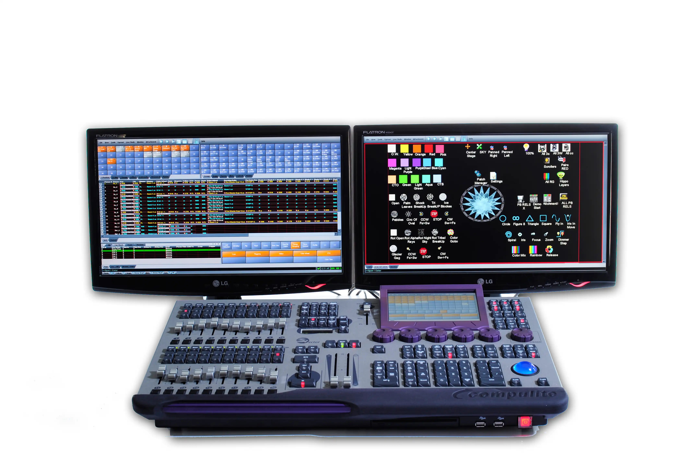
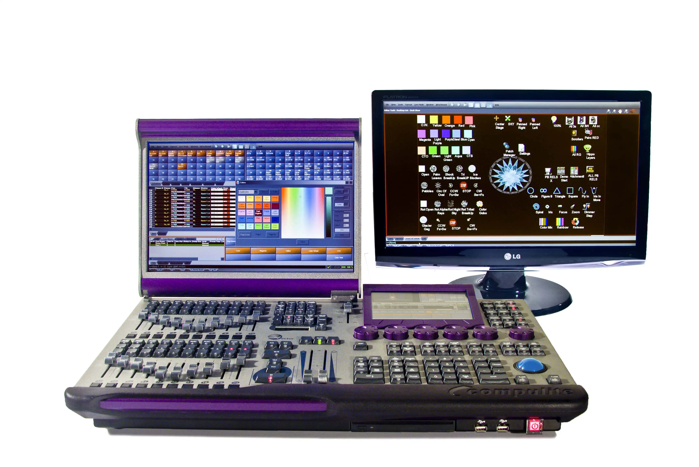
- Vector Black and UltraBlack
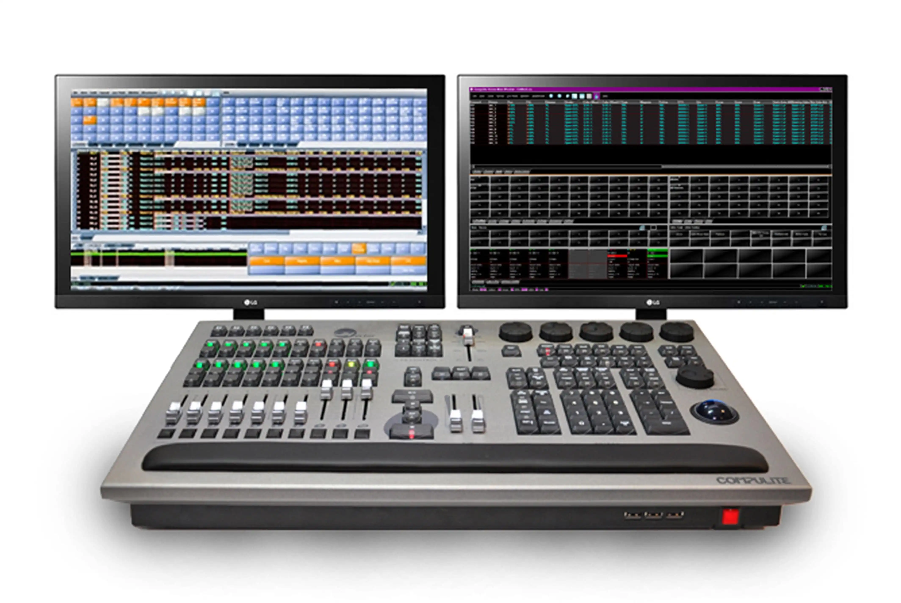
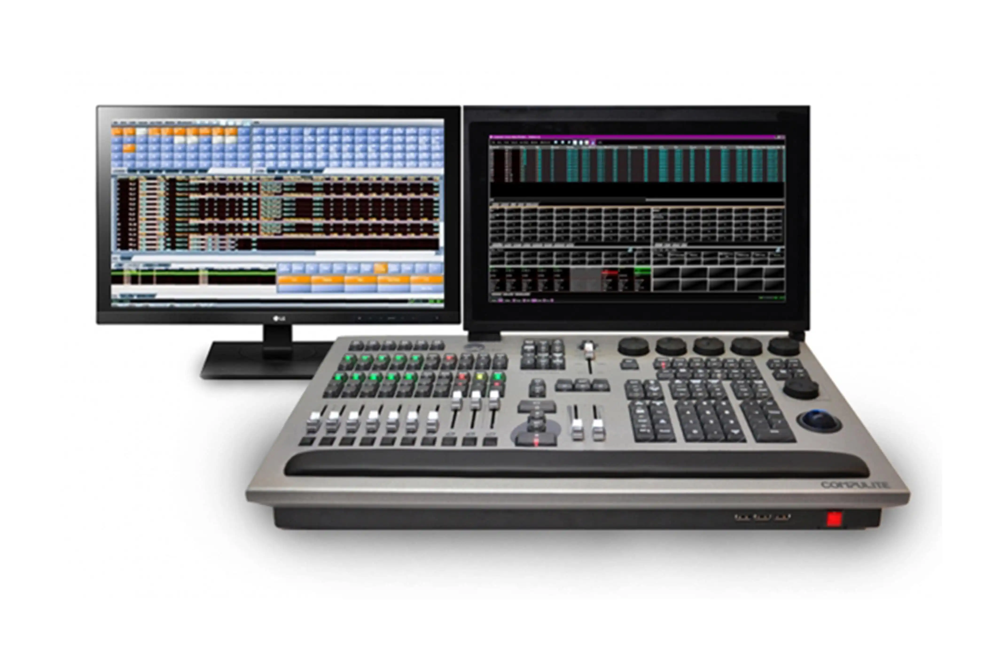
- Vector PC (onPC software)
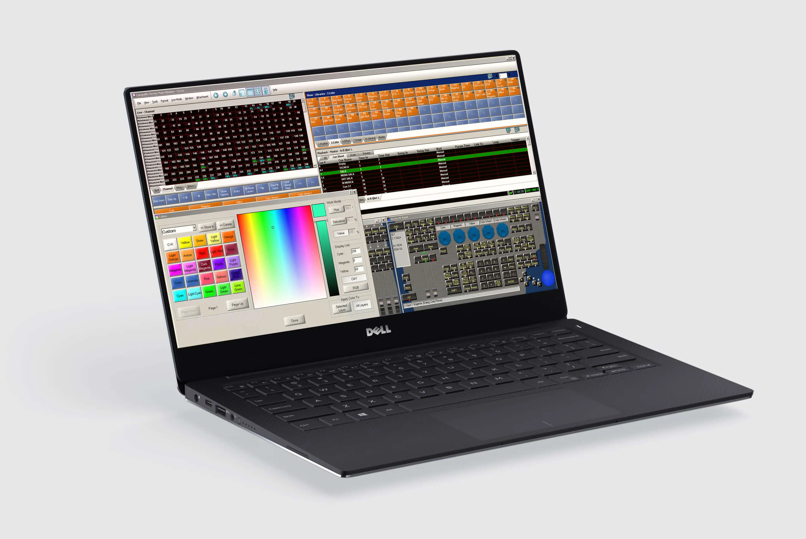
- Vector Node
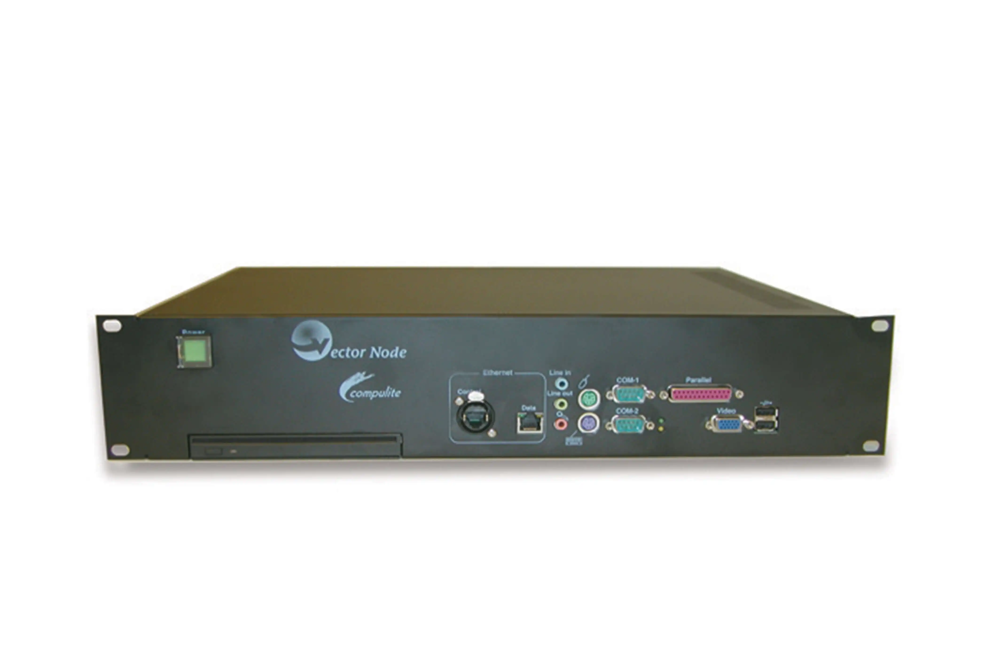
When running with Vibe a venue or a show that was previously programmed on a Compulite Vector system, it may be useful to convert the Vector show into a Vibe show. Instead of starting the programming from scratch, all the data and objects previously stored will be already available and ready to go.
👉 Compulite operators should find it easy to upgrade from Vector to Vibe because of the many similarities between the Vector and the Vibe software, starting from the terms used and the programming syntax and commands, which are widely common.
Moreover, the other Compulite Vector products that are used as accessories for the Vector consoles are also compatible with the Vibe.
These products include:
- Vector Black PC Wing
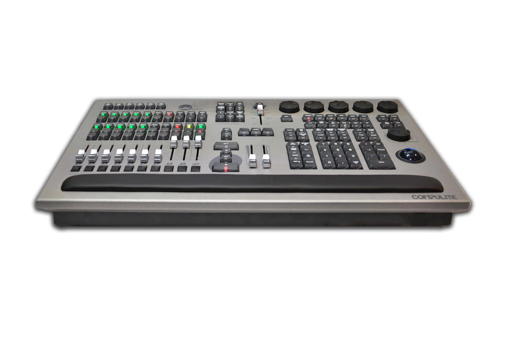
- Vector PC Wing
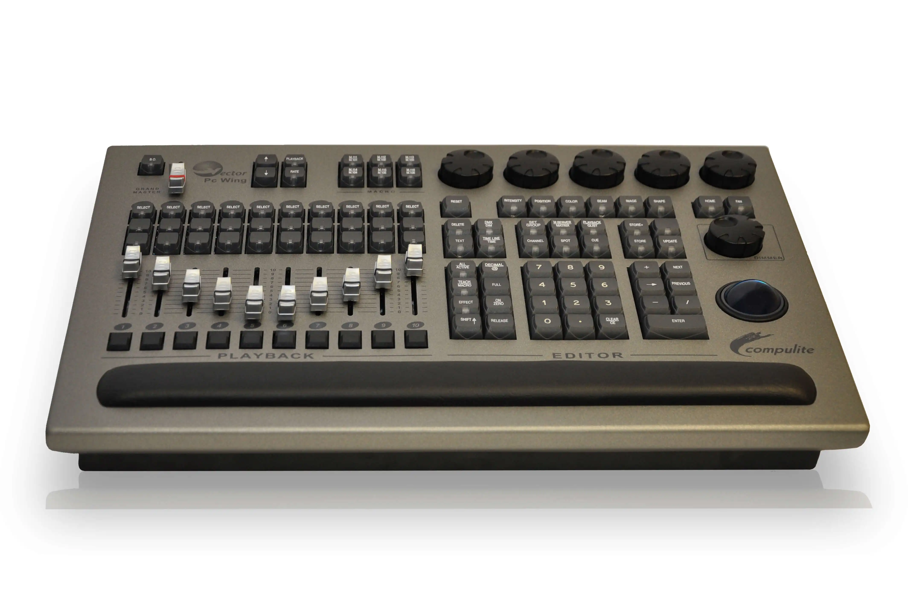
- Vector PB 20 Wing
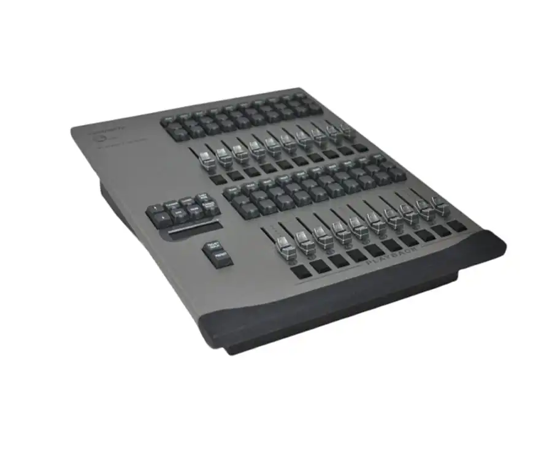
- Vector PB 10 Wing
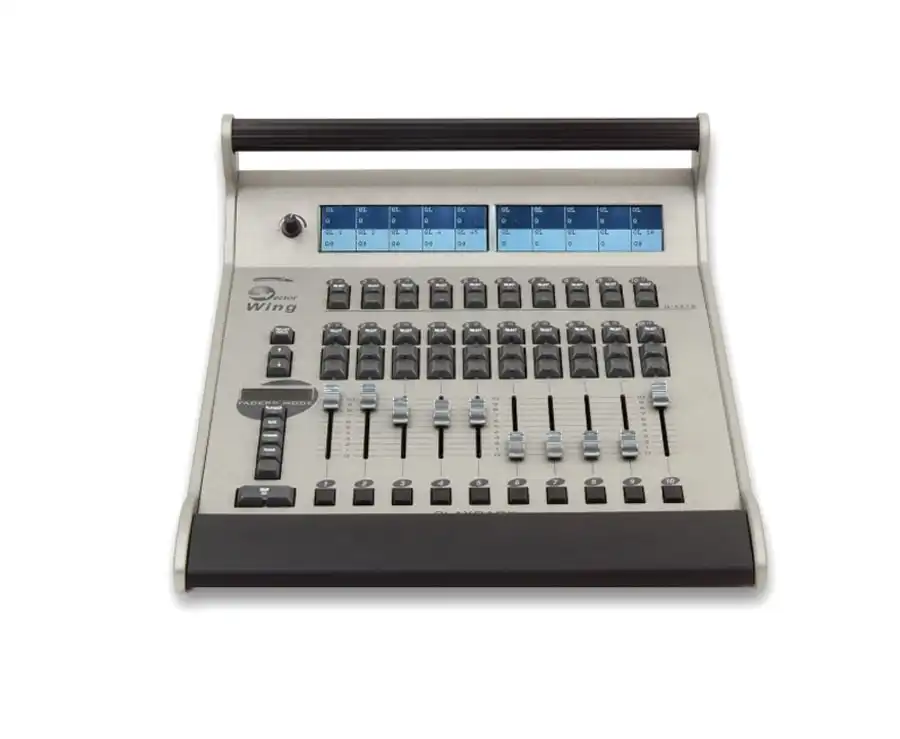
All the Compulite Vector consoles, as well as the Vector PC version, store the shows in the .cvs file format. These files are supported by Compulite Vibe and may be loaded and converted into Vibe show files, using the .shw file format, preserving the data and the show information coming from Vector.
👉 Old lighting consoles, even from different brands, used to have the possibility of storing shows in the ASCII file format, which despite being readable by different systems, it’s not much complete in terms of show data, although it could be enough for preserving the DMX output values. Vibe does not currently include a direct ASCII file import feature, but the Vector does, therefore if this operation is needed it may be easily done in two steps, by first converting the ASCII file into a Vector .cvs file and then converting the .cvs file into a Vibe .shw file.
12.3.2 Load Vector Show
In Vibe Menu, Show, tap on Load Vector Show to open the load popup.
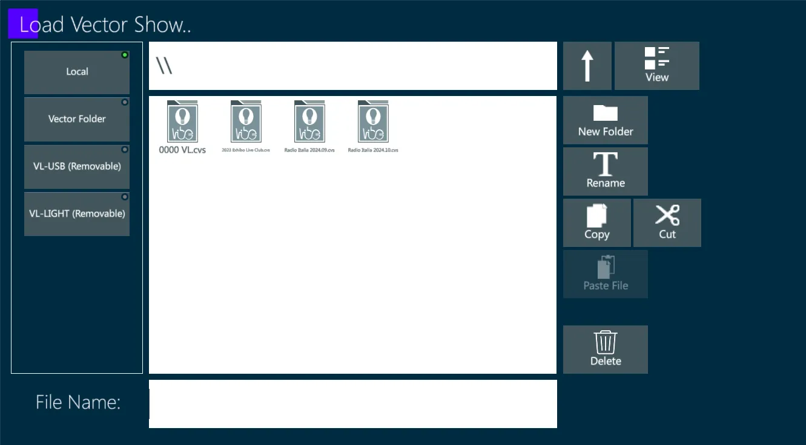
The Load Vector Show popup hows the internal folder and the external USB devices.
If opened from a PC that also has Vector software installed, the popup will also show and allow to load the file directly from Vector’s show folder.
After selecting the Vector show file, it will be analyzed by the Vibe and then a popup will guide through the process of device matching and show conversion.
Set the matching objects on each tab, by changing the number assigned to the Vibe object.
Press the Next or Back keys to navigate through the tabs.
Press the Reset key to discard the matches edited on the current tab.
Press the Generate Report (enabled on the last tab) to create a grid file that lists all the matches that have been set between the Vector and the Vibe show files.
Vector Shows will be loaded and converted as follows:
Devices: If a matching device exists, it will be used and modes will be matched. If a similar device exists, it will be used and modes will try to be matched. If no match or close match is found, a generic device will be created.
Patch: Vector device parameters will be mapped to Vibe device parameters.
Groups: will be matched.
Libraries: will be matched per Bank, parameter values will be matched.
General Libraries: will be matched to Custom Libraries.
Effects: will be matched.
Qlists: will be matched.
Cues: Vector cue numbers will be matched to Vibe cue numbers with no possibility of renumbering before the conversion process.
Cue Values: Vector cue parameter values will be matched to Vibe cue parameter values.
Temp Cues: will be converted into Vibe Scenes.
Submasters: will be converted into Vibe Submasters.
Snaps: will be matched and mapped to Vibe virtual controllers.
Playbacks: will be matched to Vibe Controllers, paging will be matched, all the common settings and functions between Vector and Vibe will be matched.
Macros: Not supported yet.
12.3.3 Device Match
The first and most important tab is the Device Match, which is used to select the Vibe devices corresponding to the Vector devices.
The matching process has to be done carefully because all the following passages regarding the data import and conversion will be based on the device match.
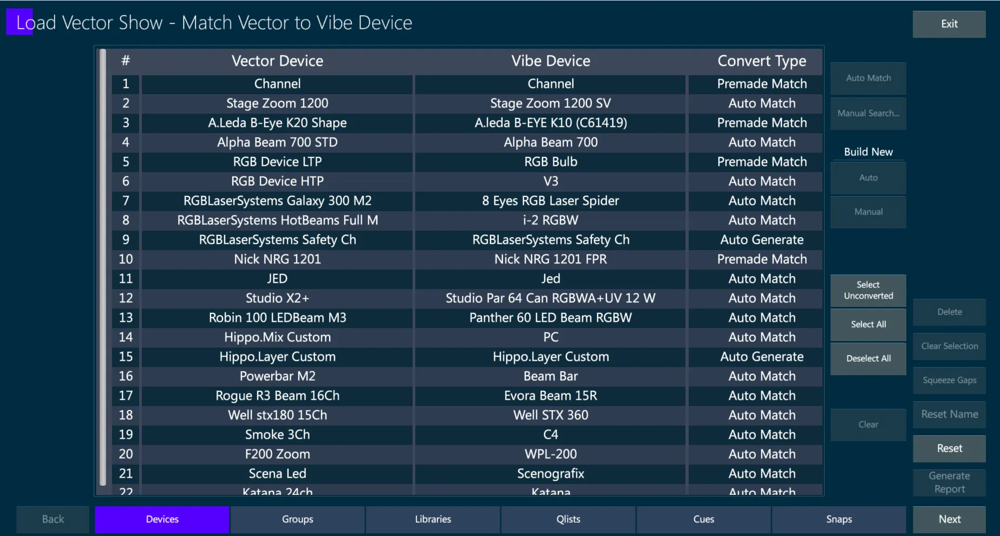
There are different options to match Vector devices to Vibe devices:
Auto Match
Select Device from the DB
Auto Generate
Ignore
Previously made match
12.3.4 Data Import
The object tabs show the source Vector objects’ names and numbering and allow to match them with the Vibe objects’ names and numbering.
Select the numbers and names to edit by tapping on the relative cell and input the new number and text that will be applied to the Vibe object. Edited items will be highlighted.
Use the keys on the right side of the popup to perform the following operations:
{Delete} The object will not be imported.
{Clear Selection} The selected objects will be deselected.
{Squeeze Gaps} The objects will be renumbered to have no gaps in between.
{Reset Name} The selected objects’ original name will be restored.
{Reset Number} The selected objects’ original number will be restored.
{Generate Report} Create an excel report of the import settings assigned in all the tabs (only available at the end of the process).
These are the objects that can be matched:
- Groups:
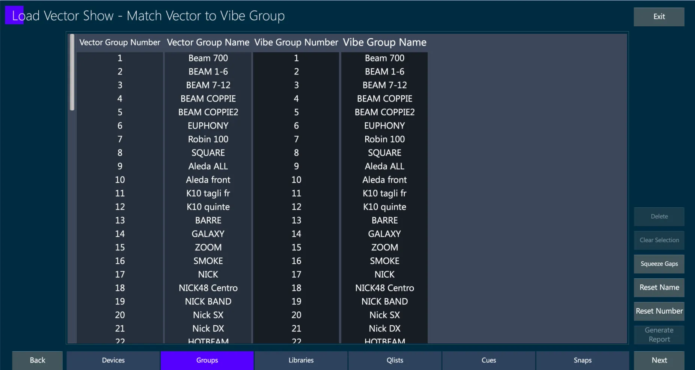
- Libraries:
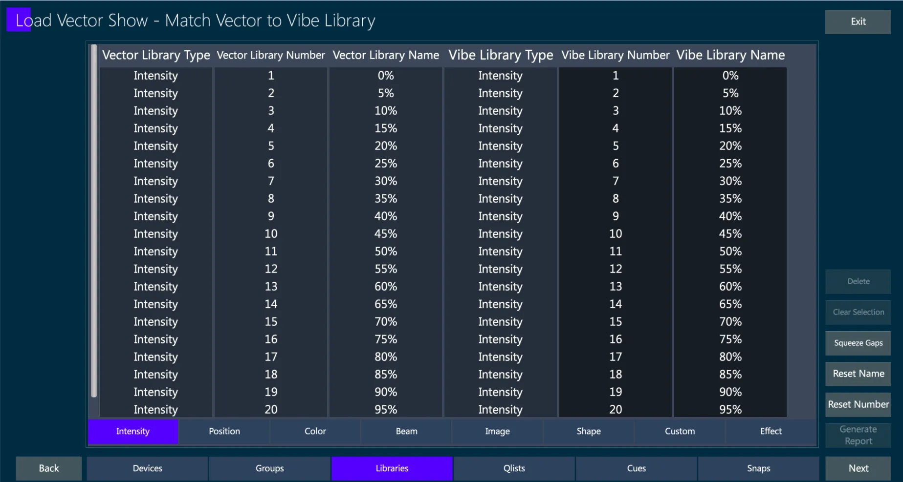
- Qlists:
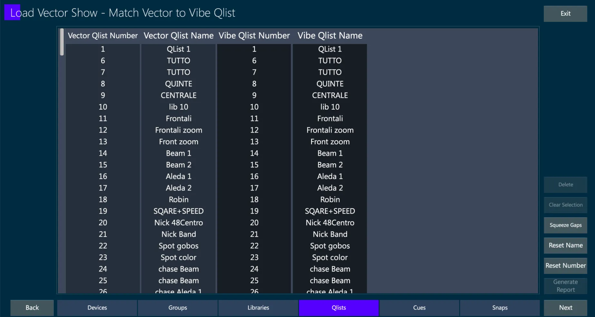
- Cues:
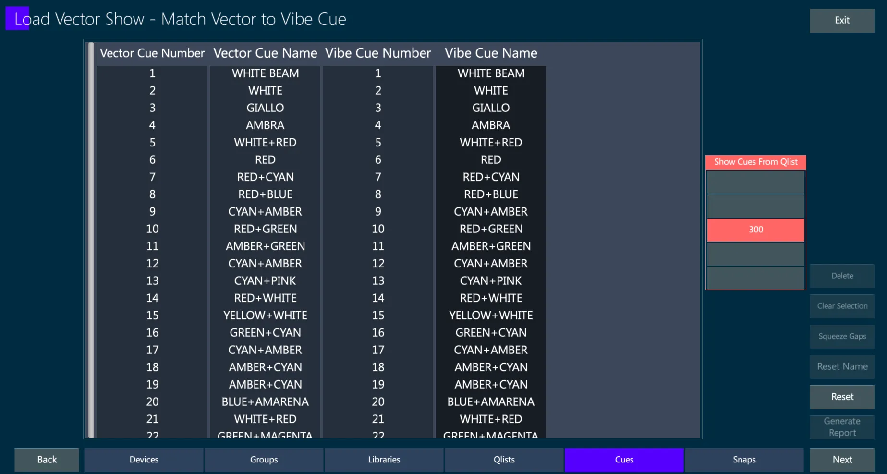
👉 This tab is just for checking purpose. Vector cue numbers will be matched to Vibe cue numbers with no possibility of renumbering them before the conversion process.
- Snaps:
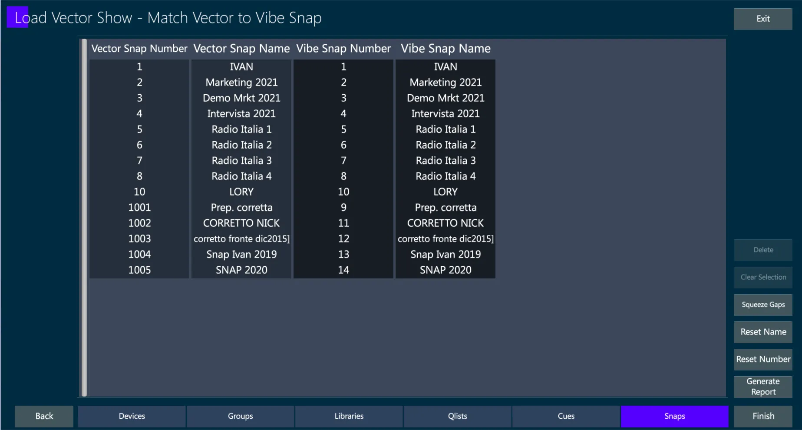
👉 Before applying and starting the conversion process, the Generate Report key may be used to save a table of contents to help keeping an archive of which source Vector data have been converted into which target Vibe data.
To Start the Vector Show Import:
Tap {Finish} to start the Vector Show import process.
A loading bar will tell the data that are currently being converted.
At the end of the process the Vibe show is generated and ready to be used.
A popup will suggest the user to store the converted show file.
To Cancel the Vector Show Import:
Tap {Exit} at anytime to abort the Vector conversion process.
A safety popup will ask to confirm.
Tap Apply and ALL the settings assigned in the popup will be lost!
12.4 MVR Show
The Load MVR Show popup is used to load a show in MVR format and convert it into a Vibe show file.
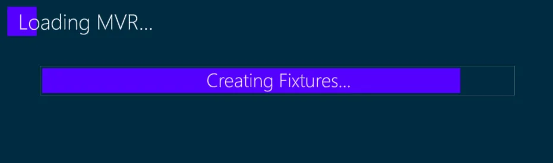
After selecting the MVR show file it will be analyzed by the Vibe and then a popup will guide through the process of device matching and show conversion.
MVR Shows will be loaded and converted as follows:
- Devices: If a matching device exists, it will be used and modes will be matched. If a similar device exists, it will be used and modes will try to be matched. If no match or close match is found, a generic device will be created.
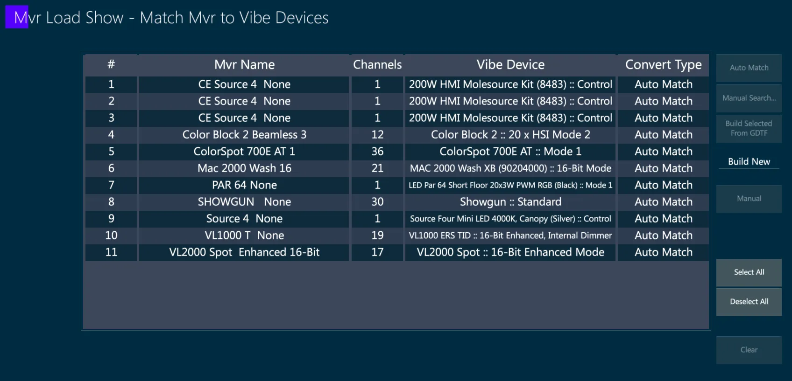
Fixture: MVR fixtures IDs will be mapped to Vibe fixtures IDs.
Patch: MVR fixture addresses will be mapped to Vibe fixture addresses.
Calibration: MVR fixtures calibration data will be mapped to Vibe calibration data.
After matching the MVR devices to the Vibe devices, press Apply and wait for the loading bar to end the show conversion process.
12.5 Clean-Up
The Clean Up Show popup shows all the objects that are not used on the show file, such as unused Fixtures and Devices, unused Libraries, unassigned Qlists and Scenes, divided by tabs.
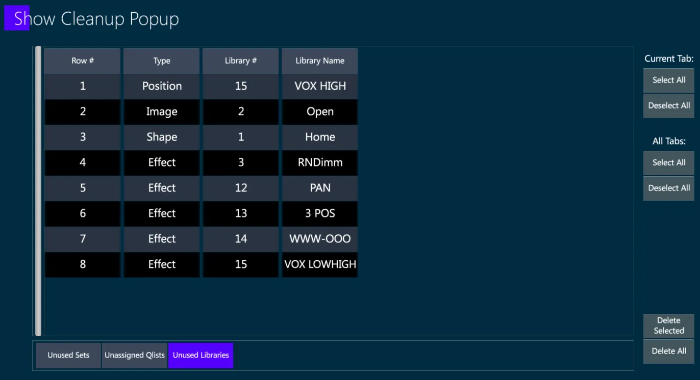
Use this feature to find and delete the unused objects, to reorder the show file and to make it lighter by deleting all the unnecessary contents.
12.6 Report
The Show Report popup collects all the objects stored into the show file, such as Groups, Libraries, Qlists and Scenes, divided by tabs.
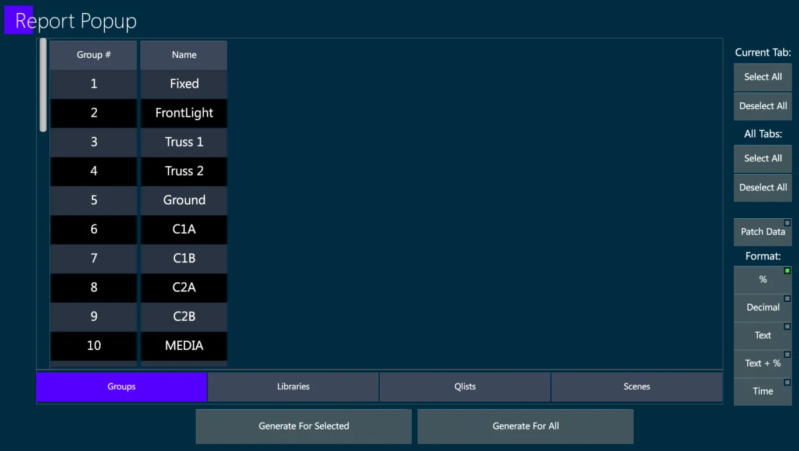
Report files can be generated for all the data or just for the selected objects. Tap “Generate For Selected” to export only the selected objects or tap “Generate For All” to export all the data, independently from the current selection.
The Format keys allow to choose how the parameters should be written on the document.
👉 Enable the {Patch Data} key to store a sheet containing all the patch information, such as fixtures’ list, universes, addresses, devices and personalities.
Reports are saved in .cvs file format into the Reports Folder, inside the WorkDir.
Use this feature to save a document containing the show information that may be needed.